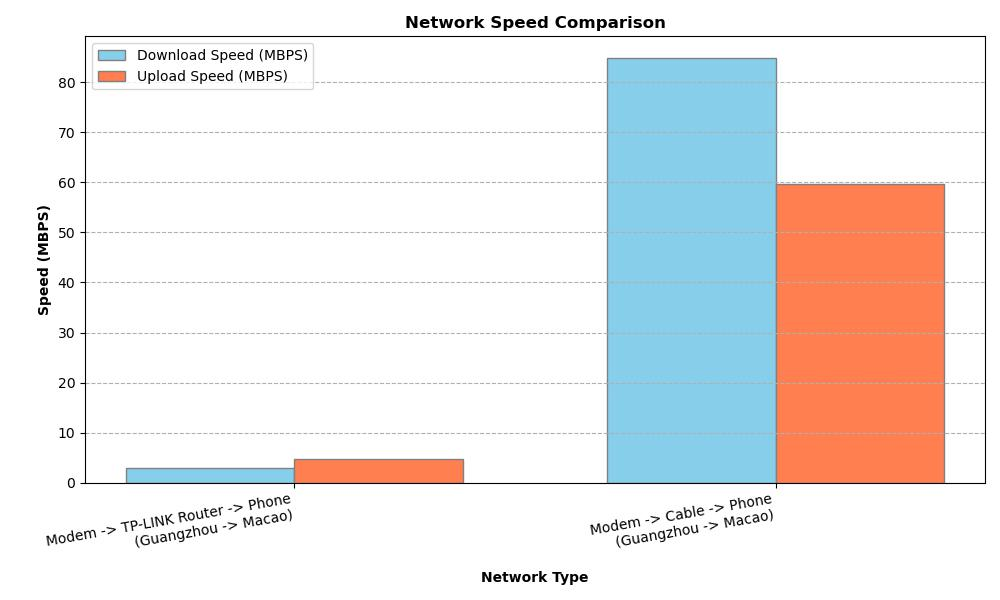

Lightning to Ethernet Adapter | Original
Table of Contents
- Lightning to Ethernet Adapter
- Product Testing and Price Comparison
- Speed Test Results and Performance Analysis
- Network Configuration and Setup
- Connection Priority and Usage Tips
- Wi-Fi Signal Strength
- Using system_profiler for Signal Analysis
- Signal-to-Noise Ratio (SNR) Calculations
- Signal Strength Guidelines and Benchmarks
- Mesh Router
- TP-Link AX3000 Experience and Setup
- ZTE AC1200 Bridge Mode Configuration
- Router Performance Comparison
- 12V Power Solutions for Routers
- Sub-Router Connection Optimization
- Registering on Any Platform Regardless of Identity
- Email Account Strategy
- Phone Number Solutions and SIM Card Options
- Apple Store Region Switching
- Payment Method Workarounds
- VPN and Proxy Requirements
- Identity Document Considerations
Lightning to Ethernet Adapter
I recently tried a new product that I had never used before. It cost me about 44 CNY on JD.com. Similar products cost around 15 USD on Walmart.com.
It works perfectly, and no extra settings are needed. An “Ethernet” menu item appears after plugging in the adapter.
I used the Speedtest iOS app to test the speed. The results are shown below.
| Network Type | Distance | Download Speed (MBPS) | Upload Speed (MBPS) | Line |
|---|---|---|---|---|
| Modem -> TP-LINK Router -> Phone | around 30m | 2.90 | 4.82 | Guangzhou -> Macao |
| Modem -> Cable -> Phone | around 30m | 84.9 | 59.7 | Guangzhou -> Macao |
In one test, the ping (ms) responsiveness results are shown below:
| Metric | Value | Jitter |
|---|---|---|
| Idle | 33 | 68 |
| Download | 1885 | 110 |
| Upload | 127 | 54 |
This is a somewhat naive test. I suspect one reason for the difference in speeds is that the connection from Modem -> TP-LINK Router is about 20m, and the connection from TP-LINK Router -> Phone is about 10m. Additionally, the TP-LINK Router uses a wireless bridge to connect to the modem.
Speedtest is a useful tool. If you use a server in Alibaba Cloud and set the bandwidth to 5Mbps, then using the app to test it will yield results around 5Mbps.
The interesting thing is that if you connect both Wi-Fi and Ethernet, there is no way to prioritize one over the other. You can only use Ethernet in this configuration. If you want to use Wi-Fi, you have to unplug the Ethernet adapter.
 Source: iOS
Source: iOS
 Source: Walmart.com
Source: Walmart.com
 Source: network_plot.py
Wi-Fi Signal Strength
system_profiler
To check your Wi-Fi signal strength, use the command below. The output will include a line similar to this: Signal / Noise: -47 dBm / -90 dBm.
% system_profiler SPAirPortDataType
Wi-Fi:
Software Versions:
CoreWLAN: 16.0 (1657)
CoreWLANKit: 16.0 (1657)
Menu Extra: 17.0 (1728)
System Information: 15.0 (1502)
IO80211 Family: 12.0 (1200.13.1)
Diagnostics: 11.0 (1163)
AirPort Utility: 6.3.9 (639.26)
Interfaces:
en0:
Card Type: Wi-Fi (0x14E4, 0x4387)
Firmware Version: wl0: Oct 31 2024 06:06:06 version 20.10.1135.4.8.7.191 FWID 01-e648b845
IO80211_driverkit-1345.8 "IO80211_driverkit-1345.8" Nov 9 2024 17:02:32
MAC Address: 06:cf:3c:59:9d:4e
Locale: Unknown
Country Code: CN
Supported PHY Modes: 802.11 a/b/g/n/ac/ax
Supported Channels: 1 (2GHz), 2 (2GHz), 3 (2GHz), 4 (2GHz), 5 (2GHz), 6 (2GHz), 7 (2GHz), 8 (2GHz), 9 (2GHz), 10 (2GHz), 11 (2GHz), 12 (2GHz), 13 (2GHz), 36 (5GHz), 40 (5GHz), 44 (5GHz), 48 (5GHz), 52 (5GHz), 56 (5GHz), 60 (5GHz), 64 (5GHz), 149 (5GHz), 153 (5GHz), 157 (5GHz), 161 (5GHz), 165 (5GHz)
Wake On Wireless: Supported
AirDrop: Supported
Auto Unlock: Supported
Status: Connected
Current Network Information:
ZTE-YsyTUc_5G:
PHY Mode: 802.11ac
Channel: 36 (5GHz, 80MHz)
Country Code: CN
Network Type: Infrastructure
Security: WPA2 Personal
Signal / Noise: -47 dBm / -90 dBm
Transmit Rate: 866
MCS Index: 9
Signal/Noise
Signal-to-Noise Ratio (SNR) helps determine signal quality. Higher SNR is better.
SNR (dB) = Signal Strength (dBm) – Noise Level (dBm)
Example:
- Pair 1: -40 dBm / -90 dBm, SNR = 50 dB
- Pair 2: -47 dBm / -90 dBm, SNR = 43 dB
Pair 1 (50 dB) is better due to higher SNR and stronger signal.
Signal Strength Guidelines:
- Excellent: > -50 dBm
- Good: -50 to -60 dBm
- Fair: -60 to -70 dBm
- Poor: < -70 dBm
Mesh Router
TP-Link AX3000 - TL-XDR 3050
I started using a mesh router in 2023. I purchased a TP-Link AX3000 system consisting of two mesh routers: a primary unit and a satellite unit. It cost me around 484 CNY at that time, but now it only costs 395 CNY on JD.com.
I initially used this system in my large house but later moved it to my parents’ house.
ZTE AC1200
During some days of the 2025 Spring Festival, my family stayed in my large house and experienced poor WiFi network quality again. To address this, I purchased another mesh router, the ZTE AC1200, which costs around 108 CNY.
Similar products available at Walmart include the TP-Link WiFi Mesh Router, Eero Dual Band Mesh Router, and NetGear Nighthawk AX3000. The prices of most of these products range from 50 USD to 200 USD.
For the ZTE AC1200 mesh router, I could simply purchase one and use bridge mode, allowing it to receive a WiFi signal and then emit its own WiFi signal. It works perfectly. Originally, the router’s domain address was 192.168.5.1. After enabling bridge mode, this IP address is no longer accessible. Instead, 192.168.1.1 will redirect you to the main router in your home network. At this point, you can access the router’s control center by navigating to http://zte.home.
If you can access the main router, you can see the connected devices and their IP addresses. Then, you can try to access each device to determine which one is the sub-router. In my case, it was 192.168.1.23, which is the address of the ZTE AC1200 mesh router.
For mobile phones, which we move around the home, it is better to use the 2.4 GHz channel as it is more stable. For laptops or desktop computers, which we typically use in our bedrooms or study rooms, it is better to use the 5 GHz channel as it is faster.
After using it for several days, I find that it is a little poor. The speed or signal is poorer than the TL-XDR 3050.
Source: JD.com
Source: Walmart.com
12V Power for Routers
A USB voltage step-up cable can be used to power routers using a power bank.
However, in some cases, the step-up cable from a power bank may not be able to set up the router correctly. The router may continuously restart.
Source: JD.com
Two Ways to Help a Sub-Router Find the Main Router
Sometimes, a sub-router cannot easily find the main router when the signal is weak.
If we have to place the sub-router far from the main router, I wonder if it is faster to first connect it in a nearby location and then move it farther away, rather than trying to connect it when it is already in the far location.
Maintaining a connection while nearby allows them to communicate with each other. I have found this method to be more effective.